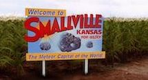

Enhancements
CSS Enhancements
Enhancement 1 - Responsive Design for mobile and phone
I have made the website reponsive with various breakpoints for the content layout to change when view on either a mobile phone or tablet. Some things you will notice is how the header and it's sub-heading changes size when viewed on an ipad and the sub-head disapears completely when view on a mobile device and how most of the section containers change in size and witdh, clearing both sides when in mobile. The navigation bar will as well change into to a drop down menu.
This allows accessability to the users of the website and improves their experience and makes it more streamlined.
The technique combined the basic media query concepts learnt at the lectures and some light reading from W3 Schools and from Medium.com.
Source:Enhancement 2 - Sliding Drop Down Mobile Menu with Just CSS
On the mobile site, I created a simple drop down menu with just CSS. This was based off a method from CSS-Tricks which makes use of the :hover pesudo class to simply reveal the menu the menu upon touch on the mobile device. This was test on an iPhone however andriod compatibility is not yet tested.
The elements being controlled by :hover are max-width. We used a simple trick of setting the height to auto to fit the current visible content between the header and breadcrumbs border, and then max-witdh and overflow:hidden to hide the navigation list, and then changed the navigation items into a block element with display:block to center them and list them down. Upon hovering or selecting the word menu, it expands out the container with a transition revealing the navigation bar.
This method was inspired from a blog-post from CSS-Tricks.
Source:Enhancement 3 - Animated Header
The Animated Header is found here. A refesh of the page may be needed.
Using the background-color: linergradient, -web-kit-color-fill, web-kit-background-clip, animatation and keyframe properties together, I created a animaated header that has a linergradient scrolling past just once. This gives a sense of motion to the header which matches the theme of the site and works as a introduction to the site by zooming a gradient fill across within the text.
These techniques were soured from two different sites and combined together to get the result I wanted.
The first technique of having an animated gradient was learnt from a code shared on codepen by Manuel Pinto and the second technique which shared how to put linegradients into a text was from a blog post fromcssgradient.io
It is to note that I have disabled the feature on the mobile and iPad Sites as from what I understand -web-kit- is not reccommened and may not be compatible across all browsers so I decided to limit the use of it onto a desktop site.
I also feel that it becomes more distracting on a smaller screen.
Enhancement 4 - Loading Custom Fonts
I have loaded custom fonts into this website. It is only used in the header seen above. It is used to add some sort of custom styling unique to the site and also design wise matches typography of the logo found in the DC-comic's "The Flash" Television show which is what what the site is inspired from.
Here I used the @fornt-fact rule in CSS to load the font with the website and then used it with a class selector on my header text, it is simple but effective.
Source:Enhancement 5 - Colour Gradient overlays for "quick link tiles".
Over at the home page, I have used linear-gradient with background-image to create a color gradient overlay on a background image for a link. This creates a functional and interesting graphical hyper link that is more apealing to users. It also saves the time needed for a developer on photoshopping a color gradient over every single picture.
Source:Enhancement 6 - Breadcrumbs
This was a piece of code that was implimented into the site but not utilised in the end due to the structure. Never the less, this was built using a series of selectors and pesudo class selectors.
Here is a placeholder page with it working and linking back to the homepage.
The code was inspired from a youtube tutorial.
Source:Enhancement 7 - Title Icon
A minor HTML enhancement that uses the link tag to add a custom icon to the title bar of the website. Giving the site a consistent design theme across.
This usues the simple technique of using the link tage with and specificing it's type as an icon.
Source:References
Image Refereces:
- Lightning Clipart Svg - Flash Logo Coloring Page 2020, in pinclipart.com, viewed 23 March 2020, https://www.pinclipart.com/pindetail/mhoJb_lightning-clipart-svg-flash-logo-coloring-page-png/.
-
 Can you hack a train? by Drozhzhin A 2015, in Kaspersky Daily viewed, 23 March 2020, https://www.kaspersky.com/blog/train-hack/10946/..
Can you hack a train? by Drozhzhin A 2015, in Kaspersky Daily viewed, 23 March 2020, https://www.kaspersky.com/blog/train-hack/10946/..
-
 outbreak-coronavirus-world-1024x506px.jpg, in AFL-CIO, viewed 23 March 2020, https://ky.aflcio.org/file/20151.
outbreak-coronavirus-world-1024x506px.jpg, in AFL-CIO, viewed 23 March 2020, https://ky.aflcio.org/file/20151.
- DC's The Flash, in WallpaperAccess, viewed 23 March 2020, https://wallpaperaccess.com/the-flash-running.
-
 National City, in Fandom, viewed 25 March 2020, https://arrow.fandom.com/wiki/National_City.
National City, in Fandom, viewed 25 March 2020, https://arrow.fandom.com/wiki/National_City.
-
 Starling City, in Fandom, viewed 25 March 2020, https://greenarrow.fandom.com/wiki/Starling_City_(Arrow).
Starling City, in Fandom, viewed 25 March 2020, https://greenarrow.fandom.com/wiki/Starling_City_(Arrow).
-
 Gotham City by Folio Illustration Agency, in Dribbble, viewed 25 March 2020, https://dribbble.com/shots/4068866-Gotham-City..
Gotham City by Folio Illustration Agency, in Dribbble, viewed 25 March 2020, https://dribbble.com/shots/4068866-Gotham-City..
-
 Keystone City, in Anglefire.com, viewed 25 March 2020, http://www.angelfire.com/mi2/dcuniverse/keystonecentral.html.
Keystone City, in Anglefire.com, viewed 25 March 2020, http://www.angelfire.com/mi2/dcuniverse/keystonecentral.html.
-  Smallville, in Fandom, viewed 25 March 2020, https://smallville.fandom.com/wiki/Smallville.
-
 Virgin Trains Azuma Standard Class- Image, Virgin Trains by Kevincm, in Economy Class & Beyond, viewed 26 March 2020, https://economyclassandbeyond.boardingarea.com/2016/03/18/introducing-the-virgin-azuma/vt11psd010_02-00_standard-class/.
Virgin Trains Azuma Standard Class- Image, Virgin Trains by Kevincm, in Economy Class & Beyond, viewed 26 March 2020, https://economyclassandbeyond.boardingarea.com/2016/03/18/introducing-the-virgin-azuma/vt11psd010_02-00_standard-class/.
-
 10 Reasons To Book A Journey On The Golden Eagle Trans-Siberian Express by Nick Walton, in Thailandtaler, viewed 26 March 2020, https://www.thailandtatler.com/life/imperial-progress.
10 Reasons To Book A Journey On The Golden Eagle Trans-Siberian Express by Nick Walton, in Thailandtaler, viewed 26 March 2020, https://www.thailandtatler.com/life/imperial-progress.
-
 Bedroom with Double Bed on a Luxury Train by Simon Pielow, in Flicker, viewed 26 March 2020, https://www.flickr.com/photos/14589121@N00/4842986183.
Bedroom with Double Bed on a Luxury Train by Simon Pielow, in Flicker, viewed 26 March 2020, https://www.flickr.com/photos/14589121@N00/4842986183.
- Meanwhile at Big Belly Burgers by DarkLitria, in DeviantArt, viewed 27 March 2020, https://www.deviantart.com/darklitria/art/Meanwhile-at-Big-Belly-Burgers-569642055.
- PAN FRIED SEA BASS WITH LEMON GARLIC HERB SAUCE by Lindermann E, in Bowl of Delicious, viewed 27 March 2020, https://www.bowlofdelicious.com/pan-fried-sea-bass-with-lemon-garlic-herb-sauce/.
-
 PWAGYU FLANK STEAK, in Jimmy P's Burther Shop and Deli, viewed 27 March 2020, https://www.jimmypsbutchershop.com/wagyu-flank-steak.
PWAGYU FLANK STEAK, in Jimmy P's Burther Shop and Deli, viewed 27 March 2020, https://www.jimmypsbutchershop.com/wagyu-flank-steak.
- 40 Easy Vegetarian Recipes for Busy Weeknights by Cooking Light, in Cooking Light, viewed 27 March 2020, https://www.cookinglight.com/food/vegetarian/simple-vegetarian-recipes
- YOU CAN NOW ASK YOUR UBER DRIVER TO BE QUIET WITHOUT OPENING YOUR MOUTH by Deitz B, in Coveteur, viewed 27 March 2020, https://coveteur.com/2019/05/18/uber-black-launches-new-quiet-mode-feature/
- The Flash / Supergirl Crossover Episode Details Revealed by Terri Schwartz, in IGN.com, viewed 27 March 2020, https://au.ign.com/articles/2017/01/20/the-flash-supergirl-crossover-episode-details-revealed
-
 The Flash (drink), in Fandom viewed 27 March 2020, https://arrow.fandom.com/wiki/The_Flash_(drink)
The Flash (drink), in Fandom viewed 27 March 2020, https://arrow.fandom.com/wiki/The_Flash_(drink)
- Traffic Management Systems, in Thales viewed 23 March 2020, https://www.thalesgroup.com/en/countries/europe/germany/transportation/traffic-management-systems.
- Stations and Terminals, in Journey Beyond Rail, viewed 23 March 2020,https://journeybeyondrail.com.au/guest-information/stations-and-terminals/.
- 30 years ago today, the first commercial UK 'mobile' phone call was made by Rockman S, in The Register, viewed 23 March 2020, https://www.theregister.co.uk/2015/01/01/30_years_of_mobile/.
- New MRT map launched with Circle Line as focal point by Channel News Asia 2019, in Channel News Asia, viewed 23 March 2020, https://www.channelnewsasia.com/news/singapore/new-mrt-train-map-circle-line-redesigned-12175906.
- Bruno, taken by Vy Do, Bruno is my sister's dog! viewed 23 March 2020.